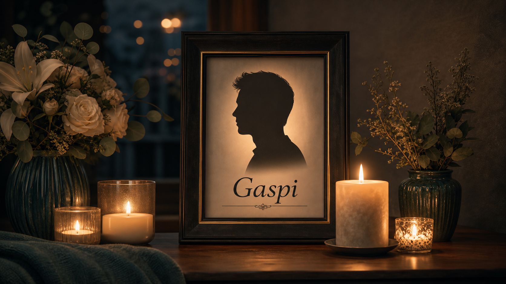
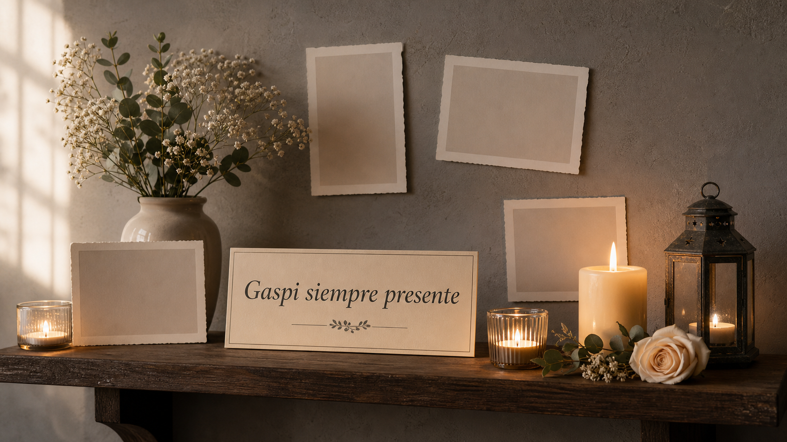

Una luz encendida
Velas y flores en su memoria
Un espacio simple para recordar, acompaniar y dejar una imagen de luz en su nombre.
Tres imagenes con tono sobrio para acompaniar la conmemoracion, publicadas junto con la pagina en GitHub Pages.


La pagina mantiene un tono respetuoso y usa imagenes simbolicas, sin representar una persona real identificable.